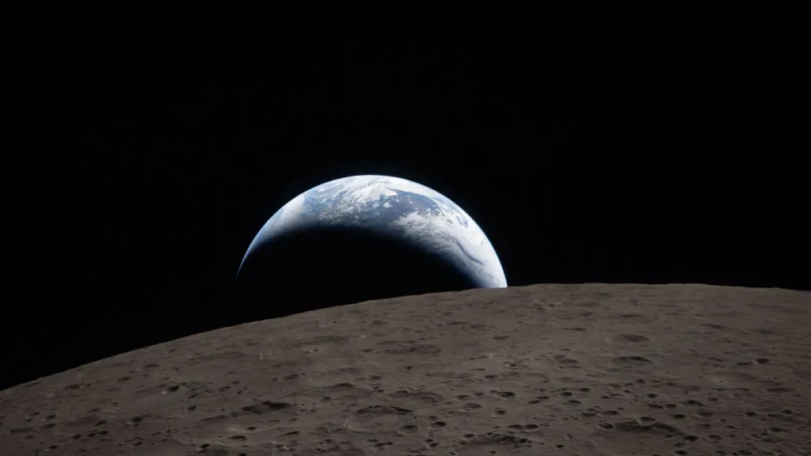

Доказала ли миссия Артемида‑2 что мы снова можем высадиться на Луне?
Ссылка на источник: Хабр


Заголовок 🕶
Заголовок🎓
Заголовок🔔
Заголовок🎶
Заголовок🎹
Заголовок📱
- Миссия «Артемида‑2» НАСА прошла все основные испытания с момента запуска 1 апреля, причём ракета, космический корабль и экипаж продемонстрировали результаты, превосходящие самые смелые ожидания инженеров.
- Первые шесть дней миссии показали, что капсула «Орион» работает в соответствии с проектом, причём впервые на борту присутствуют люди — то, что не мог доказать ни один симулятор.
- Однако, пожалуй, её величайшим достижением стали действия экипажа «Артемиды», которые вселили надежду, придали импульс развитию и вселили оптимизм в мир, который, похоже, отчаянно нуждается в вдохновении.
- Но остаётся более важный вопрос: действительно ли посадка на Луну к 2028 году, как того хотят НАСА и президент США Трамп, является достижимой целью?
Чему нас научила «АртемидаDŽ» на данный момент?
- Через несколько дней после того, как космическая ракета-носитель НАСА (SLS) прибыла на стартовую площадку в Космическом центре имени Кеннеди, был извлечён самый важный урок по поводу «Артемиды‑2».
- После двух отменённых запусков в феврале и марте из-за различных технических проблем администратор НАСА Джаред Айзекман заявил: «Запуск такой важной и сложной ракеты, как SLS, раз в три года — это не путь к успеху».
- Предыдущая беспилотная миссия «Артемида‑1» стартовала в ноябре 2022 года.
- По его словам, агентству нужно перестать относиться к каждой ракете «как к произведению искусства» и начать запускать их с той частотой, которая соответствует серьёзному проекту. По сути, это было заявление о том, что необходимо положить конец повторению одних и тех же уроков каждые три года.
- И если оценивать происходящее с точки зрения этой амбициозной цели, что же показала нам миссия за шесть дней с тех пор, как 1 апреля в космос отправились Рид Уайзман, Виктор Гловер, Кристина Кох и Джереми Хансен?
Краткий ответ: больше, чем осмеливались надеяться даже самые большие оптимисты.

Тестовая таблица запусков
| Номер запуска |
Дата запуска |
Полных лет |
| 1 |
16.04.2006 |
Стабильно |
| 2 |
29.11.2013 |
Провал |
| 3 |
10.10.2019 |
Стабильно |
Таблица
| Заголово1 |
Заголово2 |
Заголово3 |
| Заголовок2 |
10 |
|
|
| Заголово3 |
20 |
30 |
40 |
| Заголово4 |
текст |
12 |
|
| Заголово5 |
5 |
|
5 |
|
4 |
|
Блок
Строчный